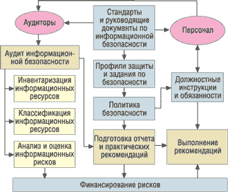
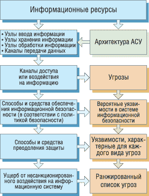

Понятия "оценка рисков информационной безопасности" (Information Security Risk Assessments) и "управление информационными рисками" (Information Risk Management) появились сравнительно недавно, но уже прочно укоренились среди специалистов в области информационной безопасности, обеспечения непрерывности бизнеса и управления качеством. В мировой практике такая оценка применяется для снижения рисков управления, а точнее сказать, ответственности персонала за внезапно возникшие проблемы. Угрозы безопасности носят вероятностный характер и изменяются в процессе жизнедеятельности компании. Идентифицируя соответствующие угрозы, анализируя сопутствующие риски и принимая затем эффективные контрмеры, удается избежать риска, смягчить его, передать риск третьему лицу в виде эффективной программы страхования.
Что такое риски
Общее определение риска дает Федеральный закон "О техническом регулировании" (№ 184-ФЗ от 27 декабря 2002 г.) в ст. 2: "…вероятность причинения вреда… с учетом тяжести этого вреда". Здесь риск рассматривается как некоторая вероятностная категория, ассоциированная с понятием вреда и соответственно с возникающими финансовыми потерями.
Данный закон представляет собой базовый правовой документ в вопросах технического регулирования. С его введением фактически утратили силу Законы РФ "О стандартизации" и "О сертификации продукции и услуг". Основная цель этого закона - создание двухуровневой системы нормативных документов, состоящей из технических регламентов, которые будут содержать обязательные требования безопасности, и добровольных стандартов, содержащих требования к качеству (до принятия закона все действующие в нашей стране ГОСТы были обязательны для исполнения). Изменился правовой статус стандартов - из обязательных они превратились в добровольно применяемые. Иными словами, стандарты, даже государственные, перестают быть обязательными для субъектов хозяйствующей деятельности. Сам термин "государственный стандарт" выходит из обращения (хотя, наверное, еще долго будет фигурировать в неофициальной форме и в виде аббревиатуры ГОСТ). Вместо него введены новые понятия: "национальный стандарт", "международный стандарт". Теперь, в соответствии с п. 8 ст. 7 закона "О техническом регулировании", в качестве основы (полностью или частично) могут использоваться международные стандарты.
Как можно "управлять" рисками
Под термином "управление информационными рисками" обычно понимают комплекс мер по идентификации, анализу и устранению выявленных в структуре информационной безопасности недостатков, которые связаны с разработкой, эксплуатацией и утилизацией информационно-вычислительных комплексов, в соответствии с существующей нормативно-правовой базой и корпоративной политикой безопасности.
Этот процесс можно разбить на следующие этапы:
- определение и оценка информационных рисков;
- выбор и применение контрмер, структурированных по уровням: административному, процедурному, программно-техническому;
- финансирование рисков;
- контроль рисков на всех этапах жизненного цикла.
Рассмотрим упрощенную структурную схему управления информационными рисками компании (рис. 1). Стрелочками на схеме показаны информационные и финансовые потоки. Схема будет справедлива почти на всех этапах жизненного цикла информационной системы (ИС), с той только разницей, что будет меняться масштабность тех или иных мер. Скажем, если на этапе сертификации ИС на соответствие стандартам в качестве аудиторов будут выступать специалисты сертификационного центра, то в процессе дальнейшей эксплуатации это могут быть штатные специалисты компании, ответственные за безопасность. На этапе утилизации может отсутствовать элемент финансирования, если та или иная система продается по остаточной стоимости.
|  | Рис. 1. Структурная схема управления информационными рисками.
|
Важнейший элемент управления информационными рисками - аудит безопасности. Существуют различные методологии такого аудита, разработанные на основе стандартов. Как отмечалось выше, на основании закона "О техническом регулировании" мы вправе применять любые стандарты, в том числе и зарубежные. В России применение отечественных стандартов упрощает многие процедуры, связанные с сертификацией и лицензированием по линии Гостехкомиссии (ныне ФСТЭК РФ)*.
* См. "Особенности российских стандартов защиты информации", "BYTE/Россия" № 12'2005, с. 65.
При использовании стандартов различных производителей результаты оценки тоже могут получаться разными. В мировой практике анализа и управления рисками основополагающим считается стандарт ISO 17799:2005 Code of practice for information security management ("Свод правил по управлению информационной безопасностью" - предыдущая версия ISO 17799:2000). Фактически этот стандарт представляет собой технологию управления информационной безопасностью.
В 2007 г. Международная организация по стандартизации (ISO, http://www.iso.org) планирует включить данный стандарт в серию ISO 27000, состоящую из шести стандартов информационной безопасности (по аналогии с другими стандартами системы менеджмента качества ISO 9000). Тогда данный стандарт получит новое название - ISO 27002.
Главное достоинство этого стандарта в том, что он имеет сравнительно небольшой объем (в отличие от стандарта США NIST 800-30) и затрагивает только общие принципы - в отличие от стандарта BSI (Bundesamt fur Sicherheit in der Informationstechnik, Германия). Обращаем внимание читателей, что последний стандарт путают с названием производителя - BSI Group (Британский институт стандартов, разработчик стандарта BS7799, прототипа ISO 17799). Общие принципы, заложенные в ISO 17799, предлагается конкретизировать применительно к исследуемым ИС.
Российский аналог этого стандарта только готовится к изданию; как заверяют специалисты, он будет опубликован в начале 2006 г. Скорее всего, это будет точный перевод международного стандарта, в целом несущий большую смысловую нагрузку, определяющую важнейшие аспекты информационной безопасности для любой организации, вне зависимости от ее масштаба и рода деятельности (см. врезку "Стандарт ISO 17799:2005").
Стандарт ISO 17799:2005Стандарт ISO 17799:2005 Code of practice for information security management содержит 11 пунктов. 1. Политика безопасности 2. Организация информационной безопасности:
3. Управление информационными ресурсами:
4. Управление персоналом:
5. Физическая и экологическая безопасность:
6. Управление коммуникациями и операциями:
7. Управление доступом:
8. Приобретение, разработка и поддержка информационных систем:
9. Управление инцидентами информационной безопасности:
10. Управление непрерывностью бизнеса:
11. Согласование:
|
В предыдущей версии стандарта (ISO 17799:2000) было 10 пунктов. Разработчики новой версии выделили "Управление инцидентами информационной безопасности" в отдельный пункт ввиду высокой важности этого вопроса.
Анализ информационных рисков вне зависимости от выбранных стандартов можно представить как некий сценарий или алгоритм действий, направленный на сбор и обобщение информации об исследуемой системе (рис. 2).
|  | Рис. 2. Возможный сценарий анализа информационных рисков.
|
На первом и втором этапах анализа рисков составляется перечень наиболее критичной и конфиденциальной информации. Третий этап - построение схем каналов доступа, через которые может выполняться несанкционированное воздействие на информацию (например, установленные у пользователя факс-модем или адаптер Bluetooth для соединения с ноутбуком или мобильным телефоном).
Четвертый этап предполагает анализ способов защиты всех возможных точек атак; его результатом должна стать характеристика всех предполагаемых уязвимостей в обороне, в том числе с учетом неблагоприятных обстоятельств. На пятом этапе, исходя из накопленной информации обо всех возможных способах и средствах преодоления защиты, определяют вероятности реализации угроз для каждой из возможных точек атак.
На заключительном этапе проводится оценка ущерба организации в случае реализации каждой из угроз.
Инструментарий анализа рисков
Для удобства проведения комплексного анализа на основании стандартов, а также чтобы избежать ошибок при разработке и управлении политикой безопасности, различные производители, как зарубежные, так и отечественные, создали множество программных комплексов. Эти инструменты не требуют глубокого знания вопросов стандартизации информационной безопасности. С их помощью легко разработать все основные положения политики информационной безопасности компании и управления процессом их внедрения на практике. База знаний таких программ содержит все необходимые постулаты стандартов, а интерфейс выполнен в виде несложного вопросника. Перемещаясь от пункта к пункту и отвечая на четко поставленные вопросы, специалист получает результат оценки в наглядной графической форме.
Во второй половине 90-х годов компания C & A Systems Security (http://www.riskworld.net) разработала методику и одноименный инструментарий для анализа и управления информационными рисками, получившие название COBRA. Эта методика позволяет выполнить в автоматизированном режиме оценку информационных рисков любой компании. Для этого предлагается использовать специальные электронные базы знаний и процедуры логического вывода, ориентированные на требования ISO 17799.
Более глубокий анализ можно провести с помощью методики и одноименного инструментального средства RA Software Tool, которые основаны на требованиях международных стандартов ISO 17799 и ISO 13335 ("Руководство по управлению безопасностью" в пяти частях, части 3 и 4), а также некоторых рекомендаций Британского национального института стандартов (BSI Group), таких, как PD 3002 ("Руководство по оценке и управлению рисками"), PD 3003 ("Оценка готовности компании к аудиту в соответствии с BS 7799"), PD 3005 ("Руководство по выбору системы защиты").
Компания RiskWatch (http://www.riskwatch.com) предлагает два продукта: один в области информационной, второй в области физической безопасности. В RiskWatch используется упрощенный подход как к описанию модели ИС, так и к оценке рисков. Существенные достоинства ПО RiskWatch с точки зрения отечественного потребителя - это сравнительная простота, малая трудоемкость русификации и гибкость метода, обеспечиваемая возможностью введения новых категорий, описаний, вопросов и т. д.
Из программных комплексов российских производителей хочется отметить "Кондор" и "Гриф" производства компании Digital Security (http://www.dsec.ru). Они привлекают простым и понятным пользовательским интерфейсом и сравнительно невысокой ценой. Демонстрационные версии этого ПО можно бесплатно скачать с сайта производителя. Аудиторам информационной безопасности предлагаются консалтинговые версии данных программных продуктов. Они много дороже своих корпоративных аналогов, зато в их базах содержатся исчерпывающие наборы аналитических данных.
Страхование рисков как элемент управления
В качестве одного из основных экономических методов управления информационными рисками, заложенных "Доктриной информационной безопасности Российской Федерации" (№ Пр-1895. от 9 сентября 2000 г.), предлагается "создание системы страхования информационных рисков физических и юридических лиц". Страхование как таковое не снижает риски, однако уменьшает финансовые потери страхователя при наступлении страхового случая. Несмотря на то что эта эффективнейшая система управления информационными рисками юридически декларирована в России довольно давно, рынок услуг страхования на сегодняшней день еще не сформировался - в основном из-за отсутствия хорошо зарекомендовавших себя методов оценки их стоимости.
Как в мировой, так и в российской практике непосредственно информация страхуется в размере расходов, необходимых для ее восстановления. При таком подходе страховая компания возмещает расходы на оплату сверхурочной работы сотрудников предприятия, привлечение специалистов сторонних организаций, а также другие целесообразные расходы, направленные на восстановление утраченной информации. Но страхование информационных рисков не может сводиться только к страхованию информации. Должны страховаться вообще риски, связанные с информационными технологиями, а к ним относятся риски утраты финансовых активов, риски остановки коммерческой деятельности, риски, связанные с возникновением гражданской ответственности. Прежде всего это страхование от преступлений в сфере ИТ: действий компьютерных вирусов, несанкционированного доступа к информации, кражи или непреднамеренной утраты носителей информации, финансового мошенничества с использованием ИТ. Объектами страхования в этом случае могут быть:
- финансовые активы в электронной форме, в том числе в системах клиент-банк;
- биллинговые системы;
- центры сертификации (удостоверяющие центры);
- Web-серверы, в том числе виртуальные;
- ERP-системы и средства защиты;
- базы данных на любых носителях информации;
- ценная информация, для которой существует вероятность утраты без возможности восстановления.
Определение страхового риска дано в Статье 9 Федерального закона "Об организации страхового дела в Российской Федерации" (№ 4015-1 от 27 ноября 1992 г., в ред. ФЗ от 21.07.2005 № 104-ФЗ): "Страховым риском является предполагаемое событие, на случай наступления которого проводится страхование. Событие, рассматриваемое в качестве страхового риска, должно обладать признаками вероятности и случайности его наступления".
В определении страхового риска отсутствует понятие вреда. Это понятие фактически становится юридической категорией, которая может считаться предметом заключения договора страхования между страхователем и страховщиком. Самое главное - наличие у события признаков вероятности и случайности наступления.
В зависимости от возможного результата при наступлении рискового события страховые риски делят на две большие группы: чистые и спекулятивные. Чистые риски означают, что при наступлении страхового случая есть вероятность, что компания понесет убытки. Спекулятивные риски означают, что возможен и положительный результат.
К чистым рискам относятся природно-естественные, экологические, техногенные, политические, транспортные и часть коммерческих рисков (имущественные, производственные и т. д.). Имущественные риски - это риски, связанные с вероятностью потерь имущества по причине природных явлений, кражи, диверсии, халатности, перенапряжения технических и технологических систем и т. п. Производственные риски связаны с убытками от остановки производства вследствие воздействия различных факторов, прежде всего утраты или повреждения основных и оборотных фондов (сырье и материалы, транспорт), а также с внедрением в производство новой техники и технологий.
Исходя из приведенной классификации рисков и учитывая, что информация принадлежит к одному из видов объектов гражданских прав, а следовательно, к системе товарных и имущественных отношений (ст. 128; ст. 129; ст. 139 Гражданского кодекса РФ № 51-ФЗ от 30 ноября 1994 г. с изм. и доп.), можно сделать вывод, что информационные риски относятся к чистым, имущественным, производственным рискам.
Информационные риски выступают объектом страхования имущественных интересов юридических и физических лиц, связанных с владением, распространением, пользованием и распоряжением информацией. Это может быть как имущественное страхование (связанное с владением, пользованием, распоряжением информацией как объектом гражданских прав), так и страхование ответственности (связанной с возмещением страхователем причиненного им вреда личности или имуществу физического лица, а также вреда, причиненного юридическому лицу). Например, возможно страхование ответственности, возникающей в связи с перерывами в деятельности компании; плохой технической поддержкой клиентов (убытки клиентов в виде неполученной прибыли по причине нарушений в каналах связи); недостаточными мерами по защите данных, принадлежащих третьим лицам; непреднамеренным разглашением конфиденциальной информации; ошибками в программных продуктах, вследствие которых наносится ущерб пользователям.
Страхование предполагает последовательное выполнение нескольких обязательных шагов:
- поиск страховой компании;
- согласование условий и предложений по страхованию;
- проведение экспертизы страхователя;
- выполнение рекомендаций, полученных в результате экспертизы;
- подписание договора о страховании.
Поиск страховой компании
К сожалению, выбор страховых компаний, мягко говоря, невелик. В основном российские страховые компании предоставляют услуги страхования информационного оборудования. На рынке услуг страхования доля компаний, которые бы занимались информацией и информационными рисками, составляет не более 10%. Обычно такие компании предлагают услуги страхования от электронных и компьютерных преступлений только для финансовых учреждений. Причем услуга предоставляется в виде полиса, служащего дополнением к комплексному страхованию финансовых учреждений. Она обеспечивает страховую защиту транзакций между банками и их клиентами от рисков несанкционированного доступа в автоматизированные банковские системы, применяемые для управления движением денежных средств.
Для организаций, не занимающихся финансовой деятельностью, на сегодняшний день существует, пожалуй, единственная в России программа страхования информационных рисков, предлагаемая компанией "Ингосстрах" (http://www.ingos.ru/ru/corporate/corp_alternate/small_business/risks/infosystems/). Согласно этой программе осуществляется: "полноценная страховая защита от компьютерных атак, несанкционированного доступа к компьютерным системам, компьютерных вирусов, преступных действий сотрудников, а также убытков от перерыва в коммерческой деятельности и дополнительных расходов, возникающих вследствие утраты информации". При этом лимит ответственности не может быть установлен ниже 50 тыс. долл. Страховой полис выдается на один год с возможностью последующего продления.
Согласование условий и предложений по страхованию
На переговорах со страховой компанией традиционно согласуются предварительные условия страхования, лимит ответственности и суммы страховых взносов, размер франшизы. Необходимо учитывать, что в соответствии с Гражданским кодексом РФ (статья 947 п.2) страховая сумма не должна превосходить действительную стоимость имущества на день заключения договора страхования. При заключении договора на сумму, превышающую стоимость имущества, договор страхования является ничтожным в части превышения страховой суммы над рыночной его стоимостью, а излишне уплаченная страховая премия страхователю не возвращается. Таким образом, при определении страховой стоимости и последующем заключении договора страхования стороны должны исходить исключительно из действительной (рыночной) стоимости объекта страхования (информации и информационных рисков, связанных с ее хранением и использованием).
Стоимость страхования определяется индивидуально и, как правило, не превышает 3-5% в год от установленных полисом лимитов ответственности. Она зависит от целого ряда факторов. Наиболее существенны из них следующие: рисковая защищенность страхуемых ИС, статистика убытков компании-страхователя и подобных ей за предыдущие несколько лет, размеры лимитов ответственности. При наличии у страхователя сертификатов на соответствие российским стандартам, таким, как ГОСТ Р ИСО/МЭК 15408-2002 ("Общие критерии оценки безопасности информационных технологий"), а также международным стандартам стоимость страхования может быть снижена до 1,5% в год.
Ставка страховой премии находится в обратной зависимости от франшизы. Франшиза - условие договора страхования, согласно которому страховщик освобождается от возмещения убытков, не превышающих определенной денежной суммы или процента от стоимости застрахованного имущества. Чем больше франшиза, тем меньше стоит страховой полис, и наоборот.
Проведение экспертизы страхователя
Страховщики оценивают страховой риск на основании Гражданского кодекса РФ (ст. 945 "Право страховщика на оценку страхового риска"), закона "Об организации страхового дела в Российской Федерации" (№ 4015-1 от 27 ноября 1992 г. с изм. и доп., ст. 6 п. 2.). Это непременное условие как страхования информационных рисков, так и любого другого вида страхования. Такая экспертиза получила название "сюрвей" (от английского survey - осмотр). Причем, если при страховании недвижимости или имущества в роли сюрвейера может выступать юрист (что часто рекомендуют делать, чтобы исключить различного рода подлоги), то при страховании информационных рисков обязательно требуется высококвалифицированный специалист в области информационной безопасности.
Наличие сертификата и положительные результаты обследования могут снизить стоимость страхования, поэтому еще до начала обследования руководители, ответственные за подготовку к этому мероприятию, должны объективно оценивать состояние ИС компании и приблизительно знать ориентировочную сумму расходов на приведение ее в "состояние готовности".
Так, на основании ст. 22 закона "Об информации, информатизации и защите информации" (№ 24-ФЗ от 20 февраля 1995 г. с изм. и доп.) риск, связанный с использованием несертифицированных ИС и средств их обеспечения, лежит на собственнике (владельце) этих систем и средств. Из этого следует, что в страхуемых ИС должны использоваться только средства, перечисленные в Государственном реестре сертифицированных средств защиты информации. Далее, из того же закона следует, что риск, связанный с использованием информации, полученной из несертифицированной системы, лежит на потребителе информации. Соответственно поставщики информации и информационных услуг тоже должны иметь сертифицированные средства защиты информации. В противном случае, если страхователю будет нанесен ущерб со стороны несертифицированного поставщика, такой случай не будет считаться страховым и денежную компенсацию страхователь не получит. Очень хорошо, если в части вопросов лицензирования и сертификации страхователь будет подготовлен еще до того, как сюрвейер переступит порог его офиса.
Для получения объективных результатов сюрвейеры должны быть независимы от всех заинтересованных сторон. Результаты обследования ИС компании-страхователя специалист предоставляет в виде отчета. Следует подчеркнуть важность такого отчета. Проведенная независимым оценщиком экспертиза не позволяет страховщику впоследствии оспаривать страховую сумму по договору, поскольку статья 948 "Оспаривание страховой стоимости имущества" ГК РФ это прямо запрещает, за исключением тех случаев, когда он "был умышленно введен в заблуждение относительно этой стоимости".
Экспертиза - мероприятие достаточно дорогостоящее. Обычно при заключении соответствующего договора страхования половина стоимости сюрвея компенсируется страховой компанией. Если подписание договора страхования не состоялось, всю стоимость оплачивает та компания, обследование которой проводилось. Возникает интересная ситуация - сюрвейер получает оплату в любом случае. Гарантией качества его работы может служить конкуренция на рынке этих услуг. Интересно также отметить, что если приглашающей стороной выступает страховая компания, то она вправе диктовать свои условия, и экспертиза уже не будет столь независимой. За рубежом в таких случаях компания-сюрвейер выбирается на основании итогов тендера, что позволяет исключить, во-первых, завышение цен на данную услугу, а во-вторых, преобладание интересов одной из сторон в результате сделки. В России, как правило, страховая компания сама приглашает сюрвейера, а страхователю остается соглашаться или не соглашаться с ее условиями.
Выполнение рекомендаций экспертизы
Логично считать, что если в результате обследования будут выявлены недостатки в ИС компании-страхователя, то их следует устранить до подписания договора страхования. Таким образом, страхователю придется не только оплачивать услуги сюрвейера, но он должен еще выделить деньги на приведение своей ИС к виду, удовлетворяющему условиям страховщика. Логично также полагать, что в качестве таких условий страховая компания вправе предложить решения тех ИТ-поставщиков, с которыми она наиболее тесно работает и интересы которых она лоббирует в данном направлении бизнеса. Как правило, такие решения оправданны и хорошо себя зарекомендовали на протяжении ряда лет, но стоимость их сравнительно высока. Это вполне нормально как для мировой практики, так и для России.
Подписание договора о страховании
Как отмечалось выше, для страхования информационных рисков могут применяться практически все виды договоров страхования, предусмотренные законодательством Российской Федерации. Примером может служить типовой договор страхования имущества физического или юридического лица. В пункте "Права и обязанности сторон" страховыми случаями признаются следующие события:
а) сбои (нарушения штатного функционирования по причинам, не предусмотренным в технической документации) ИС вследствие ошибок при их проектировании, установке, конфигурировании, эксплуатации или техническом обслуживании;
б) умышленные противоправные действия сотрудников компании, совершенные ими самостоятельно или в сговоре с третьими лицами с целью нанесения ущерба компании или получения финансовой выгоды;
в) компьютерные атаки против компании со стороны третьих лиц - умышленные противоправные действия третьих лиц, направленные на несанкционированное изменение, копирование, повреждение, уничтожение электронных данных, постоянный или временный вывод из строя ИС страхователя;
г) действия компьютерных вирусов и других вредоносных программ ("трояны", "черви", программы-шпионы и т. д.);
д) хищение денежных средств или ценных бумаг в электронном виде в результате несанкционированного доступа третьих лиц к ИС, в том числе осуществленное путем ввода мошеннических электронных команд в информационные системы компании, несанкционированной модификации компьютерного кода (программ) компании, передачи фальсифицированного электронного подтверждения (электронной цифровой подписи, криптоключа), якобы исходящего от имени компании - получателя средств или электронных ресурсов, в банк или депозитарий компании страхователя.
В пункте "Дополнительные условия и заключительные положения" договора обычно оговаривается, что о любых изменениях в структуре застрахованной ИС заказчик должен сообщать в страховую компанию, причем последняя вправе принять решение о внесении изменений и дополнений в условия договора.
Выводы
Защита информации - это "игра с нулевым балансом": чем дешевле и проще использовать некоторую информационную систему, тем больше времени, средств и усилий требуется на то, чтобы ее обезопасить, поэтому не стоит экономить на информационной безопасности.
Сформировавшаяся в России правовая и нормативная база позволяет проводить анализ и управление информационными рисками на уровне ведущих мировых стандартов. Хочется надеяться, что с введением в обращение российских аналогов стандартов ISO 17799:2005, ISO 27000, ISO 9000 и им подобных будут наконец-то востребованы и такие виды управления информационными рисками, как страхование. Предпосылками этого могут стать недавние громкие скандалы, связанные с хищением информации личного характера из различных учреждений. Гораздо дешевле учиться на чужих ошибках, чем на своих. Следовательно, лучший мировой опыт (в виде практических рекомендаций и стандартов) необходимо адаптировать и применять в России, тем более что все правовые условия для этого созданы.
Источники дополнительной информации
|